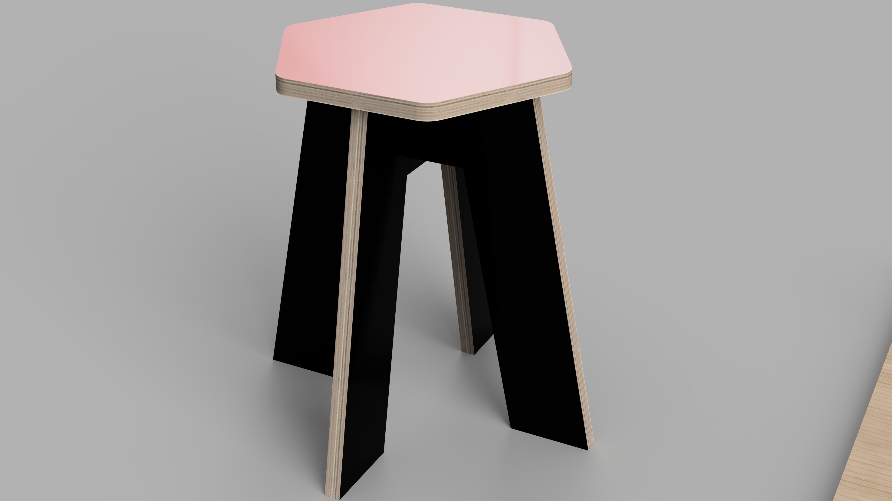
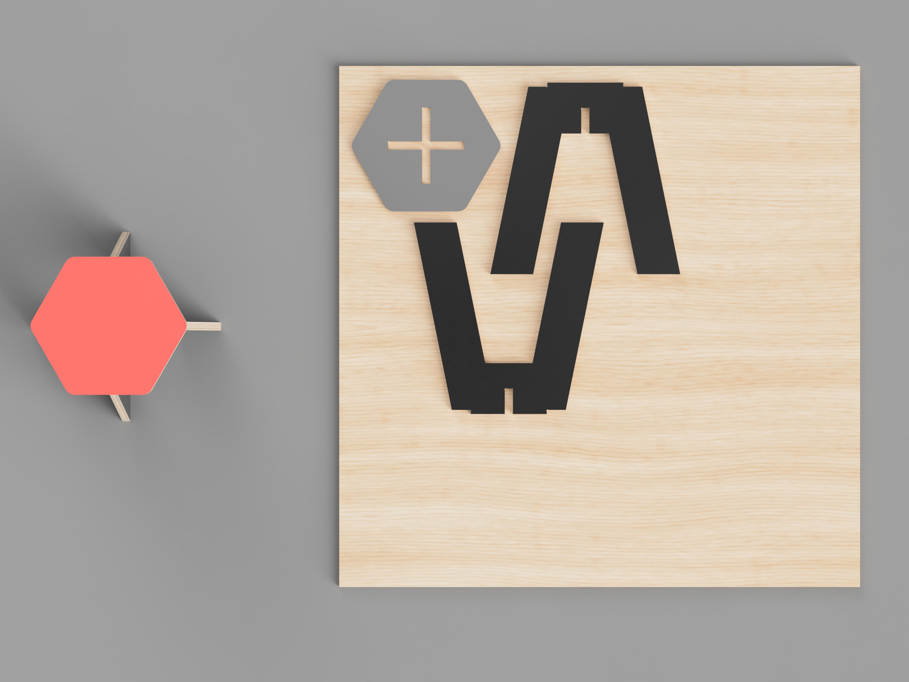
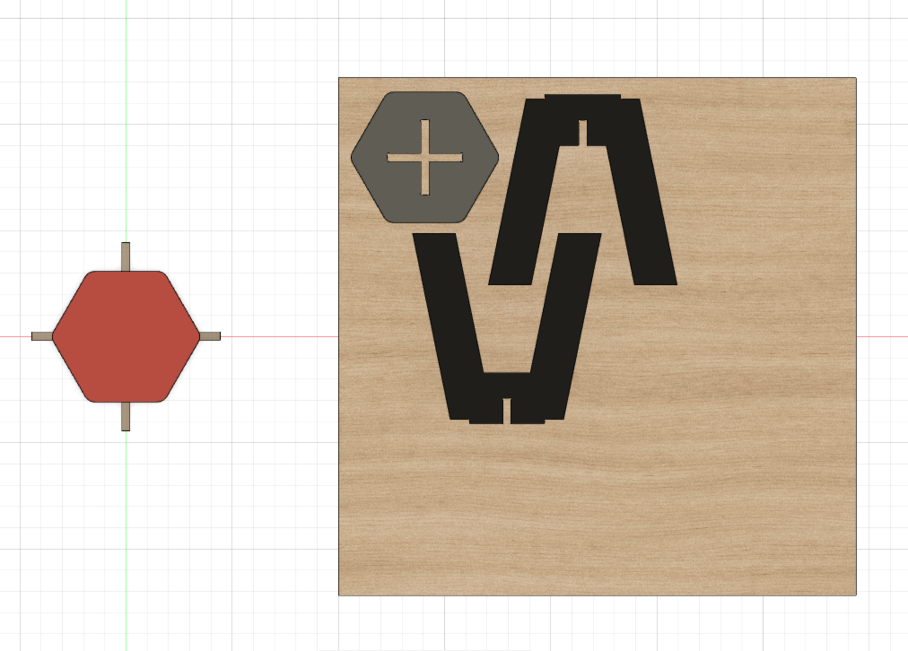
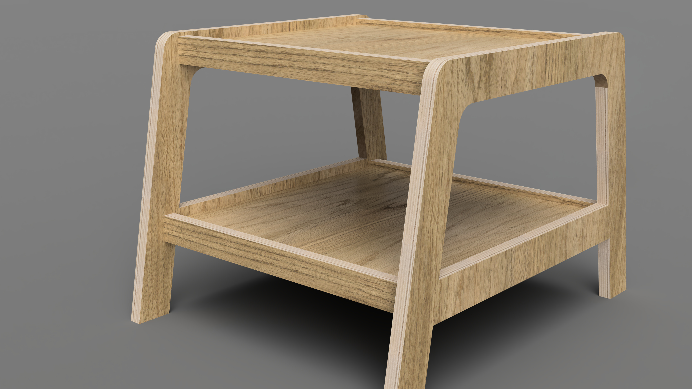
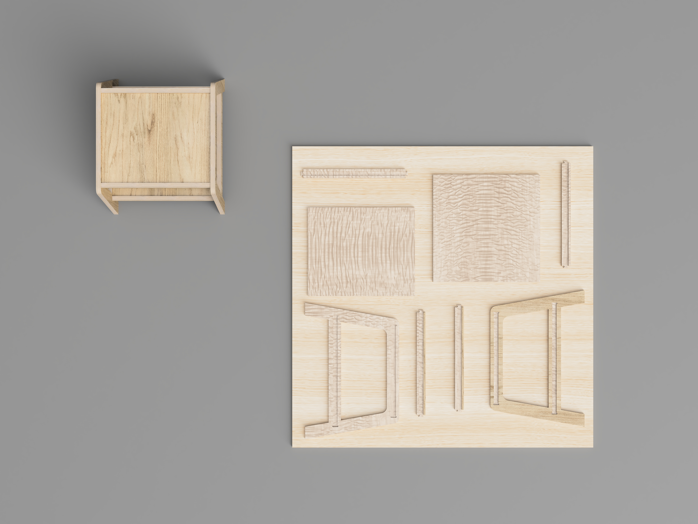
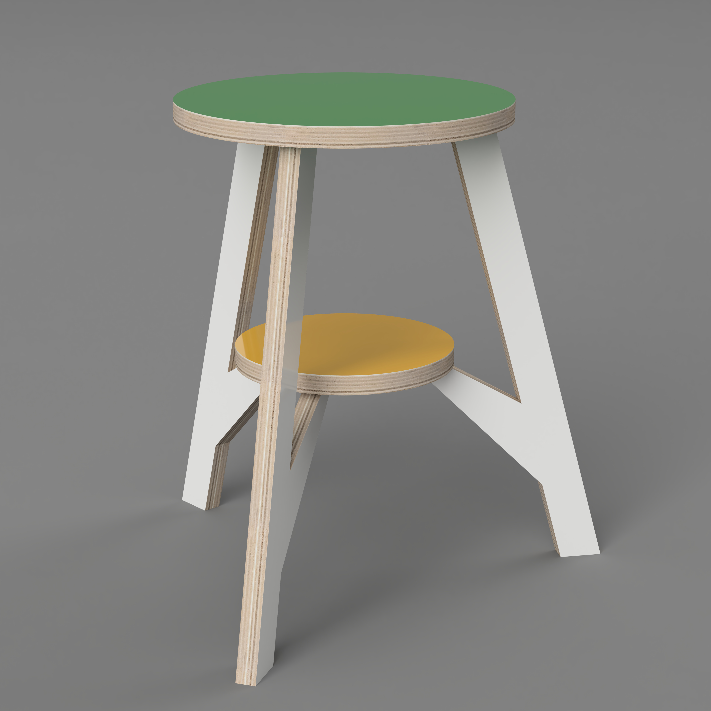
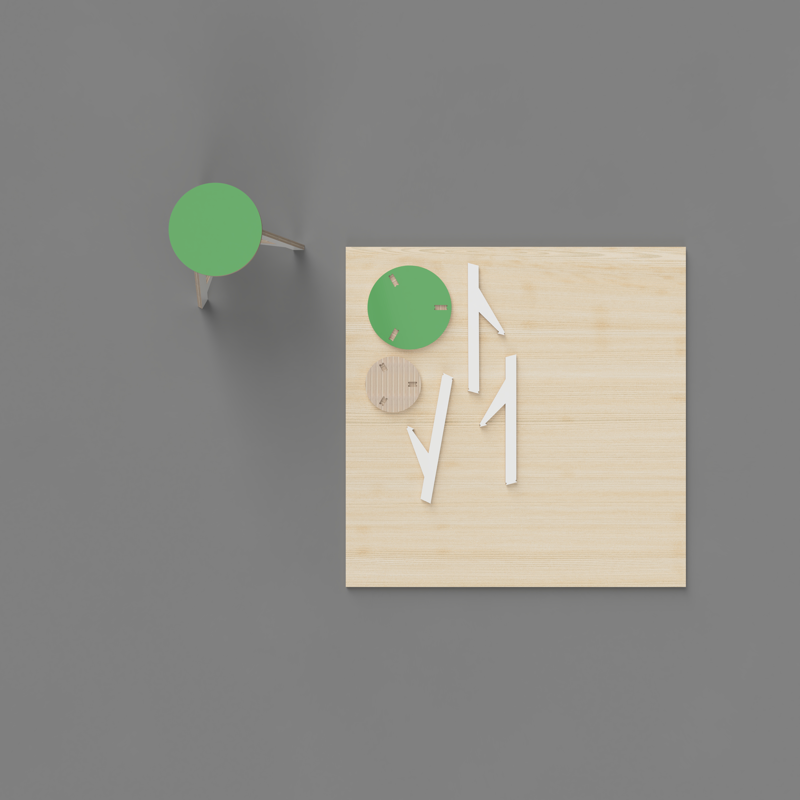
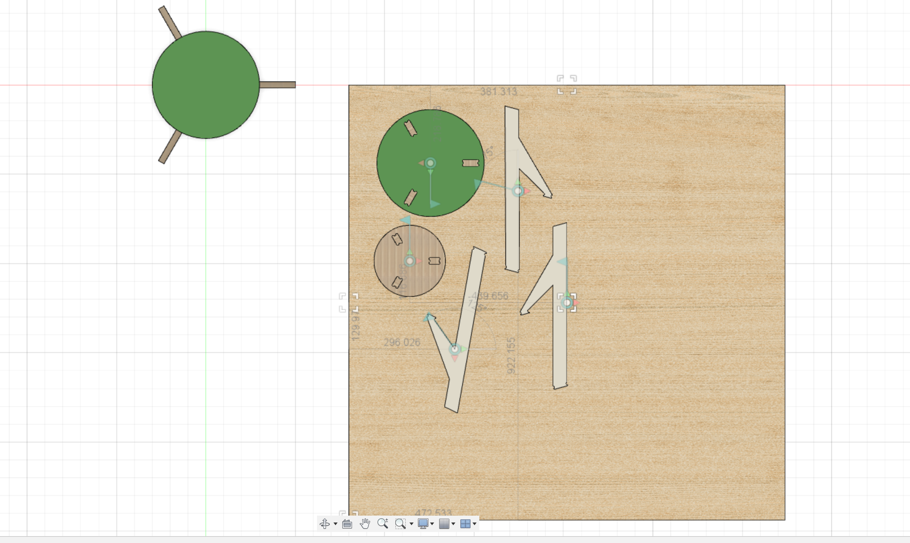
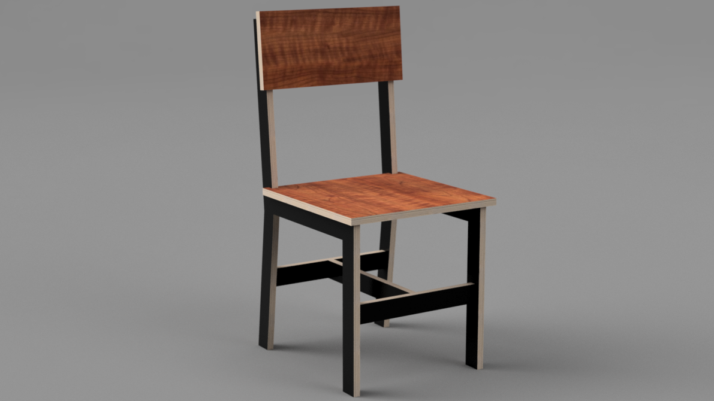
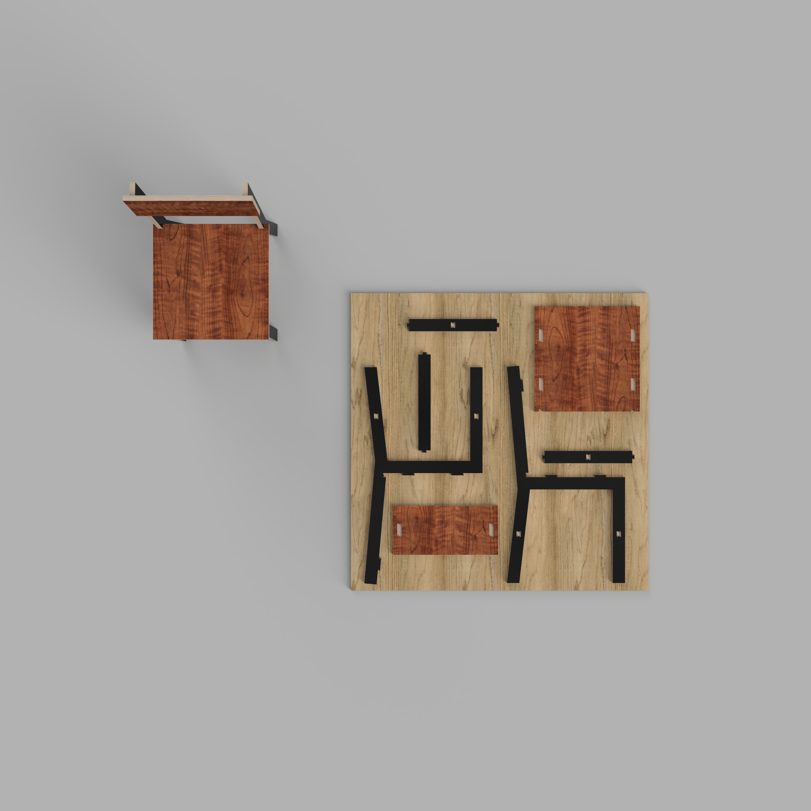

10.03 Fusion 360 CNC Modeling
Example CNC Models
Hex Stool
This video shows the process of creating a simple hexagon stool. The video uses a previous method using joints to lay the parts flat. You should use the arrange tool when you lay your parts flat.



End Table
This video shows the process of creating a simple end table. The video uses a previous method using joints to lay the parts flat. You should use the arrange tool when you lay your parts flat.



Circle Stool
This video shows the process of creating a simple circle stool. The video uses a previous method using joints to lay the parts flat. You should use the arrange tool when you lay your parts flat.



Plywood Chair
This video shows the process of creating a simple plywood chair. The video uses a previous method using joints to lay the parts flat. You should use the arrange tool when you lay your parts flat.

